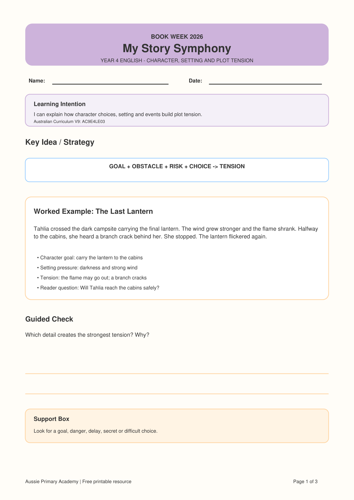

Year 4 · English · Literature · Book Week 2026 · Free Printable
Year 4 Plot Tension Worksheet
Help Year 4 students explain how a character's goal, obstacles, setting pressures, risks and choices work together to build tension in a narrative.
Worksheet Preview

Preview of the first page · Full 3-page PDF includes student activities, answer key and teaching support
About This Year 4 Plot Tension Worksheet
This Year 4 English resource helps students understand why a story becomes tense or suspenseful, rather than simply identifying what happened.
Students track a character's goal, obstacles, risks and choices, while considering how setting details and events increase pressure on the character and keep the reader interested.
It is part of the My Story Symphony – Book Week 2026 collection from Aussie Primary Academy.
Learning Intention
“I can explain how character choices, setting and events build plot tension.”
Australian Curriculum V9
AC9E4LE03
Supports students to discuss how authors and illustrators make stories engaging by developing character, setting and plot tensions.
Aussie Primary Academy is an independent publisher and is not endorsed by ACARA.
Skills Practised
- Identifying character goals
- Recognising obstacles and risk
- Analysing setting pressure
- Tracking rising tension
- Using text evidence
- Justifying character choices
Teacher / Parent Tip
Ask students to look for this pattern:
Goal + Obstacle + Risk + Choice → Tension
Track tension on a low-to-high scale and connect each rise to a setting detail, event or character decision.
What's Included
- Year 4 learning intention
- Goal–obstacle–risk–choice strategy
- Worked example: The Last Lantern
- Guided tension-analysis question
- Independent text: The Missing Music Box
- Character goal and choice questions
- Evidence-based comprehension questions
- Suggested answers
- Teacher and parent support
Differentiation
Support: Use the prompt words goal, danger, delay, secret and choice to help students identify tension-building details.
Core: Students identify two or more tension-building details and explain how they affect the reader.
Extend: Ask students to plot the tension of the story on a simple low-to-high graph and justify the highest point with evidence.
Why This Helps Readers
Understanding plot tension helps students move beyond retelling. They begin analysing how authors deliberately combine character, setting and events to create uncertainty, anticipation and reader engagement.
How to Use This Worksheet
- Whole class: Model how one obstacle or setting detail increases tension.
- Guided reading: Identify the character's goal before locating risks and obstacles.
- Independent practice: Students justify which details increase tension using evidence.
- Writing connection: Use the goal–obstacle–risk–choice pattern to plan tension in student narratives.
Frequently Asked Questions
What is plot tension?
Plot tension is the sense of uncertainty, pressure or anticipation created as a character faces obstacles, risks and difficult choices.
Can this worksheet also support narrative writing?
Yes. The goal–obstacle–risk–choice structure can help students plan stronger tension in their own narratives.
Is an answer key included?
Yes. Page 3 includes suggested answers and teaching guidance.
Is the worksheet free?
Yes. It is free to download and print for learning use.
Free Book Week Bonus
Continue with My Book Week Reading Adventure
Explore the free Foundation–Year 6 reading booklet with activities for story elements, characters, settings, vocabulary, creative response and book recommendations.
View the Free F–6 WorkbookExplore the Book Week Story Elements Collection
Choose another year level or continue through the collection.